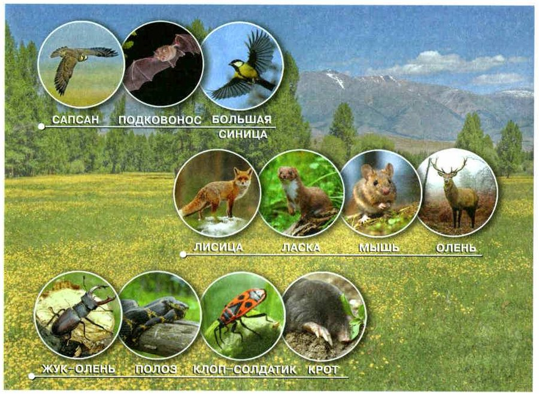
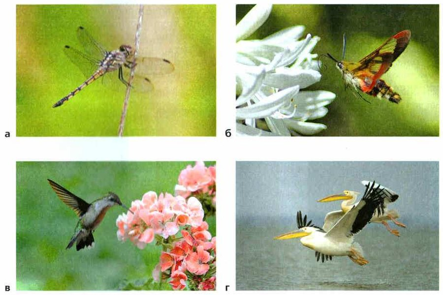
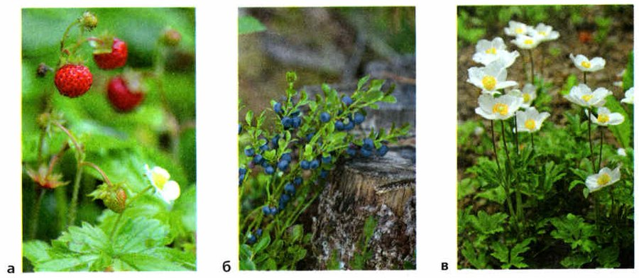
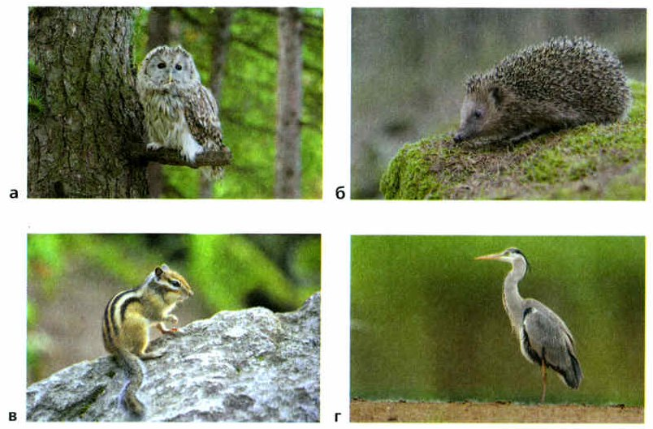
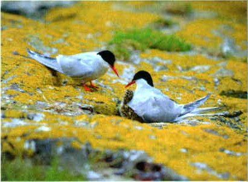

Воздух: состав и движение
Жители наземно-воздушной среды окружены воздухом (рис. 84). В воздухе есть кислород, азот, углекислый газ, водяной пар и другие газы. Кислород нужен живым организмам для дыхания. Углекислый газ зелёные растения используют, чтобы образовать органические вещества. А азот входит в состав белков.
Огромные массы воздуха всё время движутся. Вверх и вниз: тёплый воздух поднимается, а холодный опускается. Вбок: быстрое движение воздуха над землёй и водой — это ветер. Ветер появляется потому, что поверхность Земли нагревается неравномерно, а сама Земля вращается. Если ветер всё время дует в одну сторону, он даже меняет форму растений.
Состав и перемещение воздуха. Обитающие в наземно-воздушной среде организмы окружены воздухом (рис. 84). В его состав входят кислород, азот, углекислый газ, водяной пар и другие газы. Находящийся в составе воздуха кислород необходим для дыхания живых организмов. Углекислый газ используется зелёными растениями для образования органических веществ. Азот входит в состав белков.
Громадные потоки воздуха различной температуры и влажности перемещаются как горизонтально, так и вертикально. Движение воздуха по вертикали происходит вследствие того, что тёплый воздух поднимается вверх, а холодный опускается вниз. Быстрое перемещение воздуха по горизонтали над земной и водной поверхностью называют ветром. Образование ветра связано с неравномерным нагреванием поверхности и вращением Земли. Постоянно дующий ветер оказывает большое влияние на форму растений.

▲ Найди полоза — родственника змеи, которая живёт у ваших соседей.
1. Зачем живым организмам кислород, углекислый газ и азот из воздуха?
2. Почему воздух движется по вертикали?
Погода, климат и опора тела
Температура, влажность, облачность, осадки и ветер вместе — это погода. Она бывает разной каждый день. А климат (от греч. климатос — наклон: наклон солнечных лучей) — это какая погода обычно бывает в местности год за годом в каждое время года. Климат бывает сухим, влажным, тёплым, холодным, умеренным. Организмы должны быть приспособлены к климату и выдерживать перемены погоды. Где тепло и влажно, растений и животных больше всего.
Воздух гораздо менее плотный, чем вода, — он почти не держит тело. Поэтому жителям суши нужна опора. У деревьев, кустов и трав с прямыми стеблями — прочные опорные ткани, у высоких растений — мощная древесина.
У животных опора — скелет. У жуков, бабочек, мух, пауков и раков он наружный: прочный покров снаружи тела. У ящериц, птиц и зверей скелет внутренний — из множества соединённых между собой костей.
Зато в лёгком воздухе легко двигаться. На суше животные бегают, прыгают, лазают, ползают. Многие научились летать: насекомые и птицы (рис. 85) летают в поисках пищи и мест для потомства, летучие мыши тоже летают сами. А ветер переносит мелких насекомых, паучков, бактерии, семена и споры растений.
Сочетание температуры и влажности воздуха, облачность, осадки, направление ветра называют погодой. Характерные для определённой местности многолетние сезонные изменения погоды называют климатом (от греч. климатос — наклон). Он во многом определяет экологические факторы среды. Климат может быть сухим, влажным, тёплым, холодным, умеренным. Живые организмы должны быть приспособлены к климату и переносить изменчивость погодных условий. В тёплом и влажном климате богатый растительный и животный мир.
Плотность воздуха. Воздух менее плотный, чем вода. Поэтому наземным обитателям труднее поддерживать своё тело в пространстве, чем водным. У деревьев, кустарников и трав с прямостоячими стеблями хорошо развиты опорные ткани. Высокие прямостоячие растения имеют мощную опорную древесину.
У большинства животных опорой тела служит скелет. У жуков, бабочек, мух, пауков и раков скелетом является прочный наружный покров тела. У ящериц, птиц и зверей скелет внутренний, состоящий из множества соединённых между собой костей.
Низкая плотность воздуха облегчает передвижение в нём. Передвигаясь по суше, животные бегают, прыгают, лазают, ползают. Многие из обитающих на суше животных освоили активный и пассивный полёт. Насекомые и птицы (рис. 85) активно летают в воздухе в поисках пищи и мест для выведения потомства. К активному передвижению в воздухе приспособились летучие мыши. Ветром переносятся многие мелкие насекомые, пауки, бактерии, семена и споры растений.
какая она сегодня: дождь, +5°, ветер — это показывает «Яндекс Погода»
какая погода обычно бывает здесь год за годом: в Москве зима снежная, а лето тёплое

▲ У кого из них скелет наружный, а у кого внутренний?
3. Чем погода отличается от климата?
4. Почему наземным обитателям труднее поддерживать тело, чем водным?
5. Чем скелет жука отличается от скелета ящерицы?
Давление воздуха
Воздух давит на землю — это атмосферное давление. Оно меняется: в пасмурную погоду обычно ниже, в солнечную — выше. В горах давление ниже, чем у моря.
Высоко в горах воздух разреженный: в нём меньше кислорода. У людей там часто бьётся сердце и появляется одышка. А животные и высокогорные растения приспособились. В Гималаях живут яки, горные козлы, тибетские газели. Многие птицы живут и летают на большой высоте. В холодных горах Памира, Тянь-Шаня и Алтая растут растения-подушки: их короткие ветвистые побеги плотно прижаты друг к другу и образуют плотные полушария.
Давление воздуха. Давление воздушной оболочки на земную поверхность называют атмосферным давлением. Оно часто изменяется в зависимости от места и времени. Обычно атмосферное давление снижается в пасмурную погоду и повышается в солнечную. В горах атмосферное давление ниже, чем на уровне моря.
Высоко в горах воздух разрежен и в нём понижено содержание кислорода. В условиях высокогорья у людей учащается сердцебиение, появляется одышка. Животные и высокогорные растения приспособились к жизни в условиях низкого атмосферного давления. В Гималаях обитают яки, горные козлы, тибетские газели. К жизни и полётам на больших высотах приспособились многие виды птиц. В холодных высокогорьях Памира, Тянь-Шаня, Алтая существуют растения-подушки. Их сильно ветвящиеся короткие побеги тесно сближены и образуют плотные полушария.
6. Почему высоко в горах у людей появляется одышка?
7. Какие животные и растения приспособились к жизни высоко в горах?
Свет: растения и животные
Главный источник света на Земле — Солнце. Сколько света достаётся земле, зависит от того, как высоко Солнце над горизонтом, от длины дня и от погоды.
Больше всего свет нужен растениям: на свету они образуют органические вещества, без которых не могут расти и развиваться. По отношению к свету растения делят на три группы (рис. 86).
Светолюбивые растения живут на открытых, солнечных местах: травы лугов и степей, берёза, сосна, осина, яблоня. Такие деревья образуют светлые леса.
Теневыносливые растения выдерживают немного тени, но хорошо растут и на свету. Это большинство растений лесных опушек: лещина, брусника, ветреница лесная, ландыш, сныть.
Тенелюбивые растения не выносят яркого света и растут в постоянной тени под деревьями: зелёные мхи, плауны, кислица, майник.
Световой режим. Основным источником света на Земле является лучистая энергия Солнца. Освещённость земной поверхности зависит от высоты расположения Солнца над горизонтом или угла падения солнечных лучей, длины дня, погодных условий и других факторов.
Наибольшее значение солнечный свет имеет для жизни растений. На свету происходит образование органических веществ, необходимых для роста и развития растений. По отношению к свету растения делятся на светолюбивые, теневыносливые и тенелюбивые (рис. 86).
Светолюбивые растения приспособлены к жизни на открытых, хорошо освещённых местах. К этой группе относятся травянистые растения лугов и степей. Светолюбивыми являются такие деревья, как берёза, сосна, осина, яблоня. Они образуют светлые леса.
Теневыносливые растения могут переносить некоторое затенение, но хорошо растут и при хорошем освещении. К этой группе относится большинство растений лесных опушек. Теневыносливы лещина, брусника, ветреница лесная, ландыш, подъельник обыкновенный, сныть.
Тенелюбивые растения не выносят сильного освещения и растут под пологом лесов в постоянной тени. К этой группе относятся зелёные мхи, плауны, кислица обыкновенная, майник двулистный.

▲ Где в лесу искать землянику, а где — чернику?
терпят тень, но и на свету растут хорошо: черника, ландыш
на ярком свету им плохо, растут только в тени: мхи, кислица
«Выносливые» — выдерживают тень, «любивые» — без тени не могут.
Сначала сделай опыт и запиши, что увидела.
Для животных свет — важный сигнал. Глазами они находят пищу, замечают опасность и прячутся от неё. Обычно животные активны в самое удобное для них время суток.
Поэтому животные бывают дневными и ночными (рис. 87). Дневные активны, пока светло: домашние куры, воробьи, дневные хищные птицы, суслики, муравьи, стрекозы, пчёлы. Ночные — слизни, ночные бабочки, совы, кабаны, летучие мыши.
Свет является важным сигнальным фактором для большинства наземных животных. Воспринимая свет с помощью органов зрения, животные находят пищу, обнаруживают опасность и скрываются от неё. Обычно животные активны в наиболее благоприятное для них время суток.
По отношению к свету различают дневных и ночных животных (рис. 87). Дневные животные активны в светлое время суток. Дневная активность ярко выражена у домашних кур, воробьёв, дневных хищных птиц, сусликов, муравьёв, стрекоз, пчёл и многих других животных. К ночным животным относятся слизни, ночные бабочки, совы, кабаны, летучие мыши.

▲ Кого из них ты видела в Рептилиуме?
8. На какие группы делят растения по отношению к свету?
9. Чем теневыносливые растения отличаются от тенелюбивых?
10. Зачем свет животным?
Тепло: защита от холода и жары
Главный источник тепла на Земле — солнечное излучение. Нагретые солнцем тела отдают тепло воздуху. Но воздух плохо держит тепло — у него низкая теплоёмкость, не как у воды (§16). Поэтому температура воздуха меняется быстро.
Почти одинаково тепло круглый год только в тропиках. В других местах температура сильно меняется и по временам года, и за сутки. Особенно резко — в пустынях и там, где далеко до морей и океанов.
Когда холодает, растения медленнее растут или совсем останавливаются, а многие животные становятся менее активными.
Растения защищаются от холода. Где климат холодный, многие деревья и кусты осенью сбрасывают листья. На севере выживают низкие и стелющиеся растения. У карликовой берёзы, ели, можжевельника ветви, которые торчат высоко над землёй, погибают, а стелющиеся живы — зимой их укрывает снег.
И от жары: в жарких пустынях листья у растений мелкие или их нет совсем. Многие пустынные растения покрыты беловатыми волосками — опушением. Оно отражает солнечные лучи и спасает от перегрева.
Животные тоже приспособились. В Арктике у большинства насекомых окраска тёмная — она сильнее поглощает солнечное тепло. А у насекомых, которые долго бывают на ярком солнце, окраска часто светлая — она отражает лучи.
К зиме животные запасают в теле много жира. У зверей тело покрыто густым мехом, он сохраняет тепло. А где зимой много снега, животные живут в снегу или на нём: в сильные морозы тетерева, рябчики и куропатки прячутся под снег.
Тепловой режим. На нашей планете основным источником тепла является солнечное излучение. Поглощая тепло, тела нагреваются, а отдавая его согревают воздух. Он является плохим теплоизолятором и обладает низкой теплоёмкостью. Поэтому температура воздуха может быстро меняться на больших пространствах. Определённый тепловой режим является важным условием существования организмов.
Тепловой режим сравнительно постоянен только в тропических зонах земли. В других местах температура в наземно-воздушной среде сильно меняется по сезонам года и в течение суток. Резкие колебания температуры связаны с перемещениями воздуха. Особенно быстро температура воздуха меняется по сезонам года в пустынях и районах, находящихся вдали от морей и океанов.
Наземные растения и животные проявляют разную потребность в тепле в разные периоды. При понижении температуры рост и развитие растений замедляется и приостанавливается, многие животные становятся менее активными.
Строение и жизнедеятельность растений направлены на защиту организма от вредного воздействия неблагоприятной температуры воздуха. В зонах с холодным климатом многие деревья и кустарники осенью сбрасывают листья. В северных районах с низкими температурами воздуха выживают низкорослые и стелющиеся растения. Например, у стланцевых форм карликовой берёзы, ели, можжевельника и кедровника поднимающиеся высоко над землёй ветви мёртвые, а стелющиеся ветви живые, так как они зимуют под снегом и не подвергаются вредному воздействию низких температур воздуха.
В зонах тропических и субтропических пустынь с высокими температурами воздуха у растений листья небольшие или полностью отсутствуют. У многих пустынных растений образуется своеобразное беловатое опушение, способствующее отражению солнечных лучей и предохраняющее их от перегрева.
Тепловой режим оказывает существенное влияние на животных. Особенности строения и жизнедеятельности животных направлены на регулирование уровня потерь тепла. Большинство обитающих в Арктике насекомых имеет тёмную окраску, которая способствует усиленному поглощению солнечного тепла. Насекомые, подвергающиеся длительному воздействию яркого солнечного света, часто имеют светлую окраску, которая отражает солнечные лучи.
У животных к зиме в организме запасается большое количество жира и других веществ, спасающих их от замерзания. У млекопитающих тело обычно покрывается густым волосяным покровом, способствующим сохранению тепла. В районах, где зимой выпадают осадки в виде снега, животные приспособились к жизни в снежном покрове или на его поверхности. При сильных морозах под снегом прячутся тетерева, рябчики, куропатки.
11. Почему температура воздуха может быстро меняться?
12. Как растения защищаются от холода?
13. Как животные спасаются от зимнего холода?
Итоги и «Моя лаборатория»
Высокогорные растения и животные · Растения: светолюбивые, теневыносливые, тенелюбивые · Животные: дневные, ночные
- Какие газы входят в состав воздуха?
- Какое значение имеет воздух в жизни растений?
- Как тепловой режим влияет на жизнь организмов?
- Как живые организмы приспосабливаются к жизни в наземно-воздушной среде?
- Чем условия обитания в наземно-воздушной среде обитания отличаются от условий обитания в водной среде?
- Назовите причины, от которых зависит перемещение воздуха по вертикали.
Почему температура воздуха в наземно-воздушной среде может сильно меняться в течение суток?
В организмах растений и животных многое меняется по расписанию: обмен веществ, активность, рост. Когда состояния живого организма равномерно чередуются во времени, это биологический ритм. У растений это, например, движения листьев в течение суток и отмирание надземных частей трав на зиму. У животных — время активности, осенние и весенние перелёты птиц, линька.
Рекордсмен перелётов — полярная крачка. За год она пролетает до 70 000 км. Это единственная птица в мире, которая каждый год летает из Арктики в Антарктику и обратно. Крачка живёт 25—30 лет — и за жизнь пролетает столько, сколько три полёта до Луны и обратно!
Раньше перелёты изучали так: надевали птицам колечки и наблюдали за ними по пути. А теперь к лапкам крачек прикрепляют колечки с крошечными геолокаторами — приборами, которые записывают, где была птица. Так учёные узнали маршрут крачки.
Среди зверей дальше всех мигрируют киты. Серые киты проплывают больше 12 000 км в год. Такой кит бывает длиной 15 метров и весит больше 40 тонн. Летом киты кормятся в холодных водах, где много еды, а когда холодает, плывут в тёплые края, чтобы родить и вырастить детёнышей. Сигнал к началу пути — день становится короче, а корма меньше.
Обычно животные мигрируют, когда меняется время года: от холода или от засухи в степях и пустынях корма становится мало, и они уходят туда, где он есть. А белки, кедровки и клесты покидают свои места, когда плохо уродились семена хвойных деревьев.
В организмах растений и животных происходят периодические изменения скорости обмена веществ, активности, роста. Равномерное чередование во времени каких-либо состояний живой системы называется биологическим ритмом. У растений ритмы проявляются в суточном движении листьев, отмирании на зиму надземных частей у трав. Ритмы в жизни животных выражены в их двигательной активности, осенних и весенних перелётах птиц, линьке.
Например, у полярной крачки расстояние миграций может достигать до 70 000 км за год. Полярная крачка — это единственный в мире вид птиц, который сезонно перелетает из Арктики в Антарктику. Если учитывать, что средняя продолжительность жизни полярной крачки около 25—30 лет, то за свою 30-летнюю жизнь птица пролетает расстояние, равное трём полётам на Луну и обратно.
Традиционно сезонные перелёты птиц изучаются при помощи кольцевания и наблюдения по маршруту миграции. Но с появлением специальных компактных приборов — электронных геолокаторов, в данной области произошла настоящая революция. Чтобы выяснить, какое расстояния пролетают полярные крачки, учёные-орнитологи крепили к их ногам пластиковые колечки с миниатюрными геолокаторами и проследили маршруты их ежегодных миграций.
Среди млекопитающих самые длинные миграции совершают киты. Они ежегодно преодолевают большие расстояния, мигрируя между местами кормления и размножения. Среди более 80 видов китов, рекордсменами по дальности миграции являются серые киты, которые преодолевают более 12 000 км в год. Этот вид китов может достигать 15 метров в длину и весить более 40 тонн.
Одним из сигналов к началу миграции является изменение продолжительности светового дня и связанное с этим уменьшение запасов корма. Летом они живут в более холодных водах, где получают большую часть своей пищи. Когда температура падает, они начинают мигрировать в тропические и субтропические районы, чтобы размножаться и воспитывать своё потомство.
Регулярные миграции животных обычно связаны с сезонными изменениями в природе. Наступление холодов в регионах с суровым климатом или жары, а вслед за ней засухи в степях и пустынях лишают многих животных корма. Поэтому они перемещаются в места, где в это время есть корм.
Жизнь некоторых животных во многом зависит от урожая определённых растений, например, семян хвойных деревьев. В годы с плохим урожаем семян белка, кедровка, клёст покидают обжитые места и мигрируют в другие районы.

▲ Эта небольшая птица каждый год летает с одного края Земли на другой.
Проверь себя
Ошиблась — не страшно, попробуй другую кнопку.
Берёза
Образует светлые леса.
Ландыш
Растёт на лесных опушках.
Зелёный мох под елями
Растёт в постоянной тени.
Земляника
Рис. 86, а.
Черника
Рис. 86, б.
Кислица
Растёт под пологом леса.
Яблоня
Учебник называет её прямо.
Сова
Рис. 87, а.
Бурундук
Рис. 87, в.
Ёж
Рис. 87, б.
Пчела
Летает, пока светло.
Летучая мышь
Охотится в темноте.
Люся и Юкси
Днём грызут, ночью спят.
Цапля
Рис. 87, г.
1. Какой газ из воздуха нужен живым организмам для дыхания?
2. Что такое климат?
3. У кого скелет наружный?
4. Почему высоко в горах появляется одышка?
5. Где растут тенелюбивые растения?
6. Зачем пустынным растениям беловатое опушение?
Расскажи вслух
Воздух: состав, движение, плотность
- В воздухе кислород (для дыхания), углекислый газ (для растений), азот (в белках), водяной пар.
- Тёплый воздух поднимается, холодный опускается; ветер — движение воздуха по горизонтали.
- Воздух менее плотный, чем вода: нужна опора (древесина, скелет), зато легко двигаться и летать.
Свет в жизни растений и животных
- На свету растения образуют органические вещества.
- Светолюбивые (берёза, земляника), теневыносливые (черника, ландыш), тенелюбивые (мхи, кислица).
- Для животных свет — сигнал; дневные (куры, пчёлы) и ночные (совы, ежи, летучие мыши).
Тепло и защита от холода и жары
- Воздух плохо держит тепло — температура меняется быстро.
- Растения: листопад, стелющиеся ветви под снегом; в пустыне мелкие листья и опушение.
- Животные: жир, густой мех, тёмная или светлая окраска, прячутся под снег.